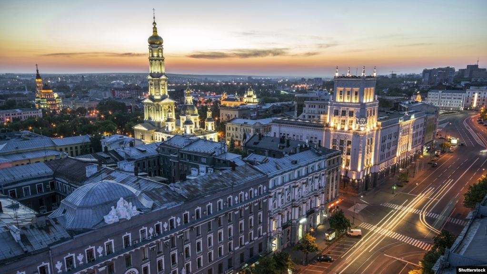

|  |  |
 |
Ха́рьков (укр. Ха́рків) — второй по численности населения город Украины, важный промышленный и научный центр страны, центр Харьковской области.
Современный город основан указом русского царя Алексея Михайловича в 1654 году на месте древнего городища, идентифицируемого иногда как половецкий город XI века Шарукань либо гуннский город V века Харька. С 1660 по 1665 год административный центр Слободских казацких полков, с декабря 1917 года по январь 1918 года столица Украинской Народной Республики Советов, в феврале — марте 1918 года столица Донецко-Криворожской советской республики, в марте — июне 1919 года и с 19 декабря 1919 года по 24 июня 1934 года — столица Украинской Социалистической Советской Республики.
В городе 142 научно-исследовательских института, 45 высших учебных заведений, включая Харьковский университет, который входит в топ-500 вузов мира и политехнический институт, который входит в топ-1000; 16 музеев, городская картинная галерея, 6 государственных театров, 80 библиотек.
В СССР был крупнейшим центром танко-, тракторо-, турбиностроения и третьим по величине индустриальным, научным и транспортным центром. Во второй половине XX века — главный транспортный узел Восточной Европы.
Награждён орденами Ленина (1970) и Октябрьской Революции (1983), а также наградами Совета Европы (2010). В 2013 году горсовет Харькова присвоил городу звание «город воинской славы».
Обладает полным комплектом наград Совета Европы: Дипломом, Почётным Флагом, Таблицей Европы и Призом Европы.
В 2012 году был одним из четырёх городов Украины, принимавших Чемпионат Европы по футболу 2012.